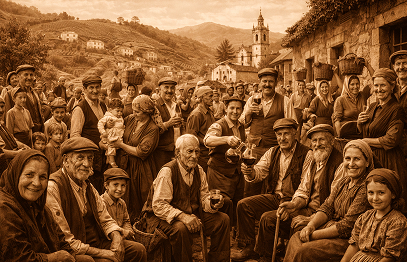
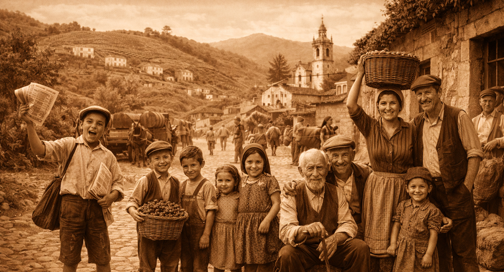

Descubra pequenas histórias sobre pessoas, famílias, estilo de vida da vila de Favaios.

Espaço dedicado às pessoas que deram vida à comunidade de Favaios — homens, mulheres e crianças cujas memórias ajudam a compreender a vila no início do século XX.